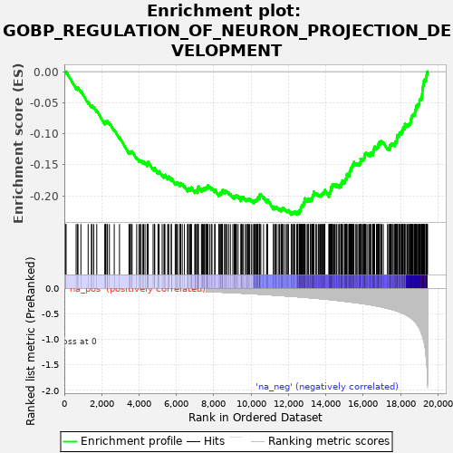
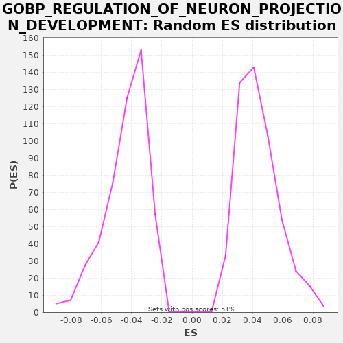

| | | Dataset | A_X_tradeoff |
| Phenotype | NoPhenotypeAvailable |
| Upregulated in class | na_neg |
| GeneSet | GOBP_REGULATION_OF_NEURON_PROJECTION_DEVELOPMENT |
| Enrichment Score (ES) | -0.23072691 |
| Normalized Enrichment Score (NES) | -5.302056 |
| Nominal p-value | 0.0 |
| FDR q-value | 0.0 |
| FWER p-Value | 0.0 |
Table: GSEA Results Summary

Fig 1: Enrichment plot: GOBP_REGULATION_OF_NEURON_PROJECTION_DEVELOPMENT
Profile of the Running ES Score & Positions of GeneSet Members on the Rank Ordered List
| SYMBOL | RANK IN GENE LIST | RANK METRIC SCORE | RUNNING ES | CORE ENRICHMENT | | 1 | GATA3 | 60 | -0.000 | -0.0006 | No |
| 2 | FKBP1B | 94 | -0.001 | 0.0002 | No |
| 3 | SCARB2 | 632 | -0.004 | -0.0254 | No |
| 4 | MINAR1 | 713 | -0.004 | -0.0271 | No |
| 5 | GPC2 | 728 | -0.004 | -0.0253 | No |
| 6 | RGMA | 887 | -0.005 | -0.0310 | No |
| 7 | DRAXIN | 1275 | -0.007 | -0.0488 | No |
| 8 | CX3CL1 | 1449 | -0.008 | -0.0554 | No |
| 9 | LPAR3 | 1486 | -0.008 | -0.0547 | No |
| 10 | SEMA3B | 1578 | -0.009 | -0.0569 | No |
| 11 | PLXNB3 | 1737 | -0.009 | -0.0627 | No |
| 12 | ITGA3 | 2166 | -0.012 | -0.0826 | No |
| 13 | MAG | 2200 | -0.012 | -0.0818 | No |
| 14 | GORASP1 | 2214 | -0.012 | -0.0800 | No |
| 15 | NTRK3 | 2284 | -0.013 | -0.0810 | No |
| 16 | SEMA3F | 2309 | -0.013 | -0.0798 | No |
| 17 | KATNB1 | 2414 | -0.014 | -0.0827 | No |
| 18 | ULK4 | 2673 | -0.015 | -0.0937 | No |
| 19 | ALKAL2 | 2954 | -0.017 | -0.1058 | No |
| 20 | ALK | 3463 | -0.020 | -0.1299 | No |
| 21 | SEMA6C | 3504 | -0.021 | -0.1295 | No |
| 22 | TBX6 | 3536 | -0.021 | -0.1286 | No |
| 23 | RTN4R | 3594 | -0.021 | -0.1290 | No |
| 24 | EFHC2 | 3629 | -0.022 | -0.1283 | No |
| 25 | TRPC5 | 3875 | -0.023 | -0.1386 | No |
| 26 | ACP4 | 3996 | -0.024 | -0.1424 | No |
| 27 | SEMA3D | 4063 | -0.025 | -0.1433 | No |
| 28 | SCARF1 | 4110 | -0.026 | -0.1432 | No |
| 29 | SCN1B | 4208 | -0.026 | -0.1457 | No |
| 30 | NGFR | 4246 | -0.027 | -0.1451 | No |
| 31 | STYXL1 | 4321 | -0.027 | -0.1465 | No |
| 32 | PTK7 | 4433 | -0.028 | -0.1497 | No |
| 33 | TSKU | 4458 | -0.029 | -0.1485 | No |
| 34 | ADCYAP1 | 4471 | -0.029 | -0.1466 | No |
| 35 | FBXO31 | 4490 | -0.029 | -0.1450 | No |
| 36 | PAK3 | 4754 | -0.031 | -0.1562 | No |
| 37 | FN1 | 4835 | -0.032 | -0.1579 | No |
| 38 | PLXND1 | 4837 | -0.032 | -0.1554 | No |
| 39 | CERS2 | 5017 | -0.034 | -0.1623 | No |
| 40 | SNAPIN | 5035 | -0.034 | -0.1606 | No |
| 41 | ANAPC2 | 5080 | -0.034 | -0.1604 | No |
| 42 | SEMA4F | 5240 | -0.036 | -0.1662 | No |
| 43 | LRP1 | 5335 | -0.037 | -0.1686 | No |
| 44 | TBR1 | 5362 | -0.037 | -0.1674 | No |
| 45 | CREB3L2 | 5388 | -0.038 | -0.1662 | No |
| 46 | NTN1 | 5533 | -0.039 | -0.1712 | No |
| 47 | DENND5A | 5581 | -0.040 | -0.1711 | No |
| 48 | P3H1 | 5587 | -0.040 | -0.1688 | No |
| 49 | SEMA3C | 5728 | -0.042 | -0.1737 | No |
| 50 | SYNGAP1 | 5729 | -0.042 | -0.1711 | No |
| 51 | VLDLR | 5937 | -0.044 | -0.1794 | No |
| 52 | BMP5 | 5989 | -0.045 | -0.1796 | No |
| 53 | HECW1 | 6017 | -0.045 | -0.1785 | No |
| 54 | MYLIP | 6074 | -0.046 | -0.1789 | No |
| 55 | LRRC4C | 6189 | -0.047 | -0.1823 | No |
| 56 | NFATC4 | 6196 | -0.047 | -0.1801 | No |
| 57 | KANK1 | 6232 | -0.048 | -0.1794 | No |
| 58 | ARHGAP4 | 6315 | -0.049 | -0.1811 | No |
| 59 | MFSD2A | 6432 | -0.051 | -0.1847 | No |
| 60 | SLC39A12 | 6598 | -0.053 | -0.1908 | No |
| 61 | RTN4 | 6607 | -0.053 | -0.1887 | No |
| 62 | EFNB3 | 6643 | -0.054 | -0.1880 | No |
| 63 | NGEF | 6716 | -0.054 | -0.1892 | No |
| 64 | TWF2 | 6761 | -0.055 | -0.1890 | No |
| 65 | MEGF8 | 6796 | -0.055 | -0.1882 | No |
| 66 | ITPKA | 6807 | -0.056 | -0.1862 | No |
| 67 | EEF2K | 6988 | -0.058 | -0.1931 | No |
| 68 | SEMA4G | 7001 | -0.058 | -0.1912 | No |
| 69 | CNTF | 7049 | -0.059 | -0.1912 | No |
| 70 | TIAM2 | 7137 | -0.060 | -0.1932 | No |
| 71 | YWHAH | 7141 | -0.060 | -0.1908 | No |
| 72 | HECW2 | 7148 | -0.060 | -0.1886 | No |
| 73 | SERPINF1 | 7169 | -0.061 | -0.1871 | No |
| 74 | ARF6 | 7175 | -0.061 | -0.1848 | No |
| 75 | SEMA4D | 7341 | -0.063 | -0.1909 | No |
| 76 | FBXO7 | 7380 | -0.064 | -0.1904 | No |
| 77 | LYN | 7394 | -0.064 | -0.1885 | No |
| 78 | CFL1 | 7451 | -0.065 | -0.1889 | No |
| 79 | AMIGO1 | 7505 | -0.066 | -0.1892 | No |
| 80 | TRPC6 | 7511 | -0.066 | -0.1869 | No |
| 81 | NFE2L2 | 7582 | -0.067 | -0.1880 | No |
| 82 | UST | 7619 | -0.067 | -0.1874 | No |
| 83 | WNT5A | 7637 | -0.067 | -0.1857 | No |
| 84 | TENM3 | 7666 | -0.068 | -0.1847 | No |
| 85 | SEMA6A | 7685 | -0.068 | -0.1831 | No |
| 86 | UBE2V2 | 7781 | -0.070 | -0.1855 | No |
| 87 | PDLIM5 | 7870 | -0.071 | -0.1876 | No |
| 88 | CARM1 | 7908 | -0.071 | -0.1870 | No |
| 89 | ANKRD1 | 8049 | -0.074 | -0.1918 | No |
| 90 | RAB29 | 8072 | -0.074 | -0.1904 | No |
| 91 | NTRK2 | 8268 | -0.078 | -0.1981 | No |
| 92 | PLXNC1 | 8299 | -0.078 | -0.1972 | No |
| 93 | ALKAL1 | 8348 | -0.079 | -0.1971 | No |
| 94 | ROR1 | 8354 | -0.079 | -0.1949 | No |
| 95 | CDKL3 | 8411 | -0.080 | -0.1953 | No |
| 96 | NDNF | 8444 | -0.081 | -0.1944 | No |
| 97 | PAQR3 | 8462 | -0.081 | -0.1928 | No |
| 98 | ATP1B2 | 8471 | -0.081 | -0.1906 | No |
| 99 | FES | 8584 | -0.083 | -0.1940 | No |
| 100 | KLK8 | 8596 | -0.083 | -0.1920 | No |
| 101 | SEMA3A | 8638 | -0.084 | -0.1916 | No |
| 102 | MBOAT1 | 8709 | -0.085 | -0.1928 | No |
| 103 | CAMK2G | 8798 | -0.087 | -0.1948 | No |
| 104 | DISC1 | 8892 | -0.088 | -0.1972 | No |
| 105 | LRP4 | 9023 | -0.090 | -0.2015 | No |
| 106 | PTK6 | 9092 | -0.091 | -0.2025 | No |
| 107 | SEMA4A | 9104 | -0.092 | -0.2005 | No |
| 108 | CHRNB2 | 9147 | -0.093 | -0.2002 | No |
| 109 | LRRK2 | 9194 | -0.093 | -0.2001 | No |
| 110 | SEMA4B | 9219 | -0.094 | -0.1988 | No |
| 111 | CDK5 | 9308 | -0.095 | -0.2009 | No |
| 112 | MAP3K13 | 9460 | -0.098 | -0.2063 | No |
| 113 | ADAM10 | 9464 | -0.098 | -0.2039 | No |
| 114 | EPHA7 | 9478 | -0.099 | -0.2020 | No |
| 115 | CXCL12 | 9520 | -0.099 | -0.2016 | No |
| 116 | AVIL | 9576 | -0.100 | -0.2020 | No |
| 117 | CRABP2 | 9686 | -0.103 | -0.2052 | No |
| 118 | CIB1 | 9757 | -0.104 | -0.2063 | No |
| 119 | OMG | 9794 | -0.105 | -0.2057 | No |
| 120 | RTN4IP1 | 9834 | -0.106 | -0.2052 | No |
| 121 | CD38 | 9876 | -0.107 | -0.2048 | No |
| 122 | PLXNA3 | 9925 | -0.108 | -0.2048 | No |
| 123 | SNX3 | 10011 | -0.109 | -0.2067 | No |
| 124 | INPP5J | 10095 | -0.111 | -0.2085 | No |
| 125 | MAPT | 10165 | -0.112 | -0.2096 | No |
| 126 | DGUOK | 10176 | -0.112 | -0.2076 | No |
| 127 | SS18L1 | 10226 | -0.114 | -0.2076 | No |
| 128 | PRKCI | 10251 | -0.114 | -0.2063 | No |
| 129 | SRCIN1 | 10304 | -0.115 | -0.2065 | No |
| 130 | TRPV4 | 10330 | -0.116 | -0.2053 | No |
| 131 | NEDD4L | 10353 | -0.116 | -0.2039 | No |
| 132 | DAB2IP | 10369 | -0.117 | -0.2021 | No |
| 133 | WASHC5 | 10441 | -0.118 | -0.2033 | No |
| 134 | LRIG2 | 10453 | -0.118 | -0.2014 | No |
| 135 | NPTN | 10463 | -0.119 | -0.1993 | No |
| 136 | SEMA7A | 10475 | -0.119 | -0.1973 | No |
| 137 | APOE | 10523 | -0.120 | -0.1973 | No |
| 138 | CAPRIN2 | 10669 | -0.123 | -0.2023 | No |
| 139 | CFLAR | 10833 | -0.127 | -0.2084 | No |
| 140 | TIAM1 | 10859 | -0.128 | -0.2071 | No |
| 141 | LZTS3 | 10886 | -0.129 | -0.2060 | No |
| 142 | DSCAM | 11198 | -0.137 | -0.2197 | No |
| 143 | ARHGAP44 | 11203 | -0.137 | -0.2174 | No |
| 144 | ARHGDIA | 11290 | -0.139 | -0.2194 | No |
| 145 | SEMA4C | 11329 | -0.140 | -0.2188 | No |
| 146 | S100A9 | 11352 | -0.140 | -0.2175 | No |
| 147 | CUL7 | 11457 | -0.143 | -0.2204 | No |
| 148 | NCKIPSD | 11525 | -0.145 | -0.2214 | No |
| 149 | LTK | 11601 | -0.147 | -0.2228 | No |
| 150 | RELN | 11626 | -0.147 | -0.2215 | No |
| 151 | SEMA3G | 11660 | -0.148 | -0.2207 | No |
| 152 | NDRG4 | 11688 | -0.149 | -0.2195 | No |
| 153 | BDNF | 11740 | -0.150 | -0.2197 | No |
| 154 | SHANK3 | 11837 | -0.152 | -0.2222 | No |
| 155 | PTPRG | 11920 | -0.155 | -0.2239 | No |
| 156 | CHRNA3 | 11975 | -0.156 | -0.2242 | No |
| 157 | LZTS1 | 12001 | -0.157 | -0.2230 | No |
| 158 | NRP1 | 12149 | -0.161 | -0.2282 | Yes |
| 159 | AKT1 | 12173 | -0.161 | -0.2269 | Yes |
| 160 | ANKRD27 | 12226 | -0.162 | -0.2270 | Yes |
| 161 | STMN2 | 12270 | -0.164 | -0.2268 | Yes |
| 162 | CHODL | 12315 | -0.165 | -0.2265 | Yes |
| 163 | TSC1 | 12339 | -0.166 | -0.2252 | Yes |
| 164 | DGKG | 12443 | -0.168 | -0.2281 | Yes |
| 165 | EFNA1 | 12490 | -0.170 | -0.2279 | Yes |
| 166 | ITM2C | 12500 | -0.170 | -0.2259 | Yes |
| 167 | LIMK1 | 12571 | -0.172 | -0.2270 | Yes |
| 168 | TMEM30A | 12588 | -0.173 | -0.2253 | Yes |
| 169 | PTPRD | 12593 | -0.173 | -0.2230 | Yes |
| 170 | THY1 | 12646 | -0.174 | -0.2232 | Yes |
| 171 | PLA2G3 | 12660 | -0.175 | -0.2213 | Yes |
| 172 | SFRP2 | 12663 | -0.175 | -0.2189 | Yes |
| 173 | RETREG3 | 12682 | -0.175 | -0.2173 | Yes |
| 174 | BAG5 | 12716 | -0.176 | -0.2165 | Yes |
| 175 | PTPN9 | 12735 | -0.177 | -0.2149 | Yes |
| 176 | NDEL1 | 12793 | -0.178 | -0.2153 | Yes |
| 177 | METRN | 12805 | -0.179 | -0.2134 | Yes |
| 178 | AP2A1 | 12836 | -0.179 | -0.2124 | Yes |
| 179 | KREMEN1 | 12840 | -0.180 | -0.2100 | Yes |
| 180 | CUX1 | 12859 | -0.180 | -0.2084 | Yes |
| 181 | CDKL5 | 12860 | -0.180 | -0.2059 | Yes |
| 182 | ADCY6 | 12874 | -0.180 | -0.2041 | Yes |
| 183 | LPAR1 | 12956 | -0.183 | -0.2058 | Yes |
| 184 | LRP8 | 13039 | -0.186 | -0.2075 | Yes |
| 185 | PSEN1 | 13053 | -0.186 | -0.2057 | Yes |
| 186 | DDX56 | 13080 | -0.187 | -0.2045 | Yes |
| 187 | FUT9 | 13174 | -0.190 | -0.2068 | Yes |
| 188 | KLF4 | 13188 | -0.190 | -0.2050 | Yes |
| 189 | PTPRS | 13253 | -0.192 | -0.2058 | Yes |
| 190 | ZDHHC15 | 13256 | -0.193 | -0.2034 | Yes |
| 191 | STK25 | 13289 | -0.193 | -0.2025 | Yes |
| 192 | SF3A2 | 13295 | -0.194 | -0.2002 | Yes |
| 193 | SEMA5A | 13306 | -0.194 | -0.1982 | Yes |
| 194 | CRTC1 | 13354 | -0.196 | -0.1982 | Yes |
| 195 | TRPV2 | 13357 | -0.196 | -0.1957 | Yes |
| 196 | EPHA4 | 13358 | -0.196 | -0.1932 | Yes |
| 197 | NSMF | 13457 | -0.199 | -0.1958 | Yes |
| 198 | SEMA5B | 13523 | -0.202 | -0.1967 | Yes |
| 199 | GRN | 13605 | -0.204 | -0.1984 | Yes |
| 200 | SIPA1L1 | 13666 | -0.206 | -0.1990 | Yes |
| 201 | HSPA5 | 13706 | -0.208 | -0.1985 | Yes |
| 202 | SDC2 | 13764 | -0.209 | -0.1989 | Yes |
| 203 | SEMA6B | 13793 | -0.210 | -0.1979 | Yes |
| 204 | NEDD4 | 13811 | -0.211 | -0.1962 | Yes |
| 205 | PPP2R5B | 13840 | -0.212 | -0.1952 | Yes |
| 206 | RAP1A | 13892 | -0.213 | -0.1953 | Yes |
| 207 | PQBP1 | 13908 | -0.214 | -0.1935 | Yes |
| 208 | ARSB | 13941 | -0.215 | -0.1927 | Yes |
| 209 | FKBP4 | 13952 | -0.216 | -0.1907 | Yes |
| 210 | EZH2 | 14174 | -0.224 | -0.1997 | Yes |
| 211 | SRF | 14176 | -0.224 | -0.1972 | Yes |
| 212 | RAP2A | 14184 | -0.224 | -0.1951 | Yes |
| 213 | FBXW8 | 14226 | -0.225 | -0.1947 | Yes |
| 214 | ITGA6 | 14254 | -0.226 | -0.1936 | Yes |
| 215 | SFRP1 | 14262 | -0.227 | -0.1914 | Yes |
| 216 | KIF13B | 14276 | -0.227 | -0.1895 | Yes |
| 217 | ZFYVE27 | 14282 | -0.227 | -0.1873 | Yes |
| 218 | LINGO1 | 14296 | -0.228 | -0.1854 | Yes |
| 219 | PRAG1 | 14349 | -0.230 | -0.1856 | Yes |
| 220 | DBN1 | 14350 | -0.230 | -0.1831 | Yes |
| 221 | PRKD1 | 14364 | -0.231 | -0.1812 | Yes |
| 222 | EFNB2 | 14430 | -0.233 | -0.1821 | Yes |
| 223 | FBXO38 | 14477 | -0.235 | -0.1820 | Yes |
| 224 | FZD1 | 14558 | -0.238 | -0.1836 | Yes |
| 225 | PLXNB1 | 14567 | -0.239 | -0.1815 | Yes |
| 226 | KALRN | 14660 | -0.243 | -0.1838 | Yes |
| 227 | RAPGEF2 | 14731 | -0.246 | -0.1849 | Yes |
| 228 | SPOCK1 | 14740 | -0.247 | -0.1828 | Yes |
| 229 | COBL | 14815 | -0.250 | -0.1841 | Yes |
| 230 | TRIM46 | 14821 | -0.250 | -0.1819 | Yes |
| 231 | NCS1 | 14832 | -0.251 | -0.1799 | Yes |
| 232 | SEMA6D | 14877 | -0.253 | -0.1796 | Yes |
| 233 | MAP2K1 | 14884 | -0.253 | -0.1774 | Yes |
| 234 | NME1 | 14891 | -0.253 | -0.1752 | Yes |
| 235 | PRRX1 | 14994 | -0.258 | -0.1780 | Yes |
| 236 | RNF6 | 15026 | -0.259 | -0.1771 | Yes |
| 237 | BCL11A | 15040 | -0.260 | -0.1752 | Yes |
| 238 | MTOR | 15054 | -0.260 | -0.1734 | Yes |
| 239 | TNIK | 15085 | -0.262 | -0.1724 | Yes |
| 240 | ARC | 15110 | -0.263 | -0.1711 | Yes |
| 241 | RND2 | 15120 | -0.263 | -0.1691 | Yes |
| 242 | KIDINS220 | 15121 | -0.263 | -0.1665 | Yes |
| 243 | ID1 | 15137 | -0.264 | -0.1648 | Yes |
| 244 | DVL1 | 15228 | -0.268 | -0.1670 | Yes |
| 245 | IST1 | 15267 | -0.270 | -0.1664 | Yes |
| 246 | FLNA | 15269 | -0.270 | -0.1639 | Yes |
| 247 | NEFL | 15276 | -0.270 | -0.1617 | Yes |
| 248 | TRAK2 | 15295 | -0.271 | -0.1601 | Yes |
| 249 | OPA1 | 15310 | -0.272 | -0.1583 | Yes |
| 250 | MARK1 | 15351 | -0.274 | -0.1579 | Yes |
| 251 | GAK | 15353 | -0.274 | -0.1554 | Yes |
| 252 | PTEN | 15378 | -0.275 | -0.1541 | Yes |
| 253 | EPHB3 | 15400 | -0.276 | -0.1527 | Yes |
| 254 | PLXNB2 | 15433 | -0.278 | -0.1518 | Yes |
| 255 | SARM1 | 15437 | -0.278 | -0.1494 | Yes |
| 256 | CDH4 | 15484 | -0.280 | -0.1493 | Yes |
| 257 | HDAC2 | 15504 | -0.281 | -0.1478 | Yes |
| 258 | CRKL | 15509 | -0.281 | -0.1454 | Yes |
| 259 | SPP1 | 15607 | -0.285 | -0.1480 | Yes |
| 260 | ABL2 | 15657 | -0.288 | -0.1480 | Yes |
| 261 | EPHA3 | 15715 | -0.291 | -0.1485 | Yes |
| 262 | DBNL | 15780 | -0.294 | -0.1493 | Yes |
| 263 | VEGFA | 15816 | -0.296 | -0.1486 | Yes |
| 264 | SLIT2 | 15826 | -0.297 | -0.1465 | Yes |
| 265 | ARHGAP35 | 15857 | -0.299 | -0.1456 | Yes |
| 266 | INPP5F | 15859 | -0.299 | -0.1431 | Yes |
| 267 | ROR2 | 15860 | -0.299 | -0.1405 | Yes |
| 268 | PLXNA1 | 15922 | -0.302 | -0.1412 | Yes |
| 269 | MACF1 | 15973 | -0.304 | -0.1413 | Yes |
| 270 | STX1B | 16017 | -0.307 | -0.1410 | Yes |
| 271 | MAGI2 | 16049 | -0.308 | -0.1401 | Yes |
| 272 | ACAP3 | 16062 | -0.309 | -0.1382 | Yes |
| 273 | NCK1 | 16071 | -0.309 | -0.1361 | Yes |
| 274 | RYK | 16087 | -0.310 | -0.1343 | Yes |
| 275 | STK11 | 16094 | -0.310 | -0.1321 | Yes |
| 276 | STK24 | 16136 | -0.313 | -0.1317 | Yes |
| 277 | SS18L2 | 16158 | -0.314 | -0.1303 | Yes |
| 278 | FSTL4 | 16246 | -0.319 | -0.1323 | Yes |
| 279 | GDI1 | 16316 | -0.323 | -0.1334 | Yes |
| 280 | CYFIP1 | 16376 | -0.327 | -0.1339 | Yes |
| 281 | DPYSL3 | 16383 | -0.327 | -0.1317 | Yes |
| 282 | POU3F2 | 16408 | -0.328 | -0.1304 | Yes |
| 283 | ATF1 | 16508 | -0.335 | -0.1331 | Yes |
| 284 | GSK3A | 16511 | -0.335 | -0.1306 | Yes |
| 285 | CNTN1 | 16524 | -0.336 | -0.1287 | Yes |
| 286 | TNR | 16560 | -0.338 | -0.1280 | Yes |
| 287 | DHX36 | 16565 | -0.339 | -0.1257 | Yes |
| 288 | GFI1 | 16585 | -0.340 | -0.1242 | Yes |
| 289 | PPP1R9A | 16599 | -0.341 | -0.1223 | Yes |
| 290 | NIN | 16616 | -0.343 | -0.1206 | Yes |
| 291 | RAB11A | 16714 | -0.350 | -0.1232 | Yes |
| 292 | MDK | 16742 | -0.352 | -0.1220 | Yes |
| 293 | CNR1 | 16770 | -0.354 | -0.1209 | Yes |
| 294 | SLITRK1 | 16806 | -0.356 | -0.1202 | Yes |
| 295 | DNM1L | 16809 | -0.356 | -0.1178 | Yes |
| 296 | RHOA | 16824 | -0.358 | -0.1160 | Yes |
| 297 | RAPGEF1 | 16861 | -0.360 | -0.1153 | Yes |
| 298 | PTPRO | 16867 | -0.360 | -0.1131 | Yes |
| 299 | BRSK1 | 16945 | -0.366 | -0.1146 | Yes |
| 300 | CRK | 16946 | -0.366 | -0.1120 | Yes |
| 301 | RRN3 | 16998 | -0.371 | -0.1122 | Yes |
| 302 | PLXNA4 | 17081 | -0.377 | -0.1139 | Yes |
| 303 | ARHGAP33 | 17304 | -0.396 | -0.1230 | Yes |
| 304 | CAMSAP2 | 17368 | -0.403 | -0.1238 | Yes |
| 305 | NEGR1 | 17419 | -0.408 | -0.1239 | Yes |
| 306 | CHN1 | 17428 | -0.409 | -0.1218 | Yes |
| 307 | EP300 | 17453 | -0.412 | -0.1205 | Yes |
| 308 | PAK2 | 17454 | -0.412 | -0.1180 | Yes |
| 309 | BHLHB9 | 17495 | -0.416 | -0.1175 | Yes |
| 310 | RAB21 | 17516 | -0.418 | -0.1160 | Yes |
| 311 | CDC20 | 17569 | -0.423 | -0.1162 | Yes |
| 312 | CDH2 | 17615 | -0.429 | -0.1160 | Yes |
| 313 | SKIL | 17699 | -0.436 | -0.1179 | Yes |
| 314 | ABI2 | 17707 | -0.437 | -0.1157 | Yes |
| 315 | SERPINI1 | 17724 | -0.441 | -0.1140 | Yes |
| 316 | PTPRF | 17736 | -0.442 | -0.1120 | Yes |
| 317 | BMPR2 | 17798 | -0.448 | -0.1127 | Yes |
| 318 | DIP2B | 17805 | -0.449 | -0.1105 | Yes |
| 319 | DAB1 | 17806 | -0.449 | -0.1079 | Yes |
| 320 | PREX1 | 17814 | -0.450 | -0.1058 | Yes |
| 321 | IQGAP1 | 17830 | -0.452 | -0.1040 | Yes |
| 322 | NR2F1 | 17841 | -0.453 | -0.1020 | Yes |
| 323 | HGF | 17908 | -0.461 | -0.1029 | Yes |
| 324 | SETX | 17935 | -0.465 | -0.1017 | Yes |
| 325 | DCC | 17944 | -0.467 | -0.0996 | Yes |
| 326 | CBFA2T2 | 17958 | -0.468 | -0.0978 | Yes |
| 327 | ENC1 | 18039 | -0.480 | -0.0994 | Yes |
| 328 | PLPPR5 | 18061 | -0.484 | -0.0980 | Yes |
| 329 | B2M | 18063 | -0.484 | -0.0955 | Yes |
| 330 | CAMK1 | 18106 | -0.492 | -0.0952 | Yes |
| 331 | TWF1 | 18111 | -0.493 | -0.0928 | Yes |
| 332 | PAK1 | 18144 | -0.499 | -0.0920 | Yes |
| 333 | SEMA3E | 18146 | -0.499 | -0.0895 | Yes |
| 334 | MARK2 | 18218 | -0.510 | -0.0907 | Yes |
| 335 | UBE3A | 18233 | -0.513 | -0.0889 | Yes |
| 336 | ACTR2 | 18234 | -0.513 | -0.0863 | Yes |
| 337 | OBSL1 | 18240 | -0.515 | -0.0841 | Yes |
| 338 | GOLGA4 | 18339 | -0.535 | -0.0867 | Yes |
| 339 | GRID2 | 18364 | -0.539 | -0.0854 | Yes |
| 340 | L1CAM | 18431 | -0.554 | -0.0863 | Yes |
| 341 | PPFIA2 | 18440 | -0.555 | -0.0842 | Yes |
| 342 | EPHB2 | 18485 | -0.567 | -0.0840 | Yes |
| 343 | CAMK1D | 18522 | -0.576 | -0.0833 | Yes |
| 344 | NLGN1 | 18538 | -0.580 | -0.0816 | Yes |
| 345 | CCDC88A | 18551 | -0.585 | -0.0797 | Yes |
| 346 | PARP6 | 18555 | -0.587 | -0.0773 | Yes |
| 347 | RGS2 | 18568 | -0.590 | -0.0754 | Yes |
| 348 | ROBO2 | 18587 | -0.595 | -0.0738 | Yes |
| 349 | PLK5 | 18605 | -0.602 | -0.0721 | Yes |
| 350 | PTK2B | 18625 | -0.608 | -0.0706 | Yes |
| 351 | DNM3 | 18657 | -0.615 | -0.0697 | Yes |
| 352 | KDM1A | 18683 | -0.624 | -0.0685 | Yes |
| 353 | ADGRB3 | 18739 | -0.644 | -0.0688 | Yes |
| 354 | ATP8A2 | 18770 | -0.653 | -0.0678 | Yes |
| 355 | CUX2 | 18775 | -0.656 | -0.0655 | Yes |
| 356 | FEZ1 | 18786 | -0.662 | -0.0635 | Yes |
| 357 | RUFY3 | 18788 | -0.663 | -0.0610 | Yes |
| 358 | SHOX2 | 18830 | -0.685 | -0.0606 | Yes |
| 359 | NGF | 18838 | -0.689 | -0.0585 | Yes |
| 360 | FYN | 18849 | -0.693 | -0.0564 | Yes |
| 361 | WNT3 | 18861 | -0.698 | -0.0545 | Yes |
| 362 | RAB17 | 18887 | -0.712 | -0.0533 | Yes |
| 363 | KNDC1 | 18960 | -0.752 | -0.0545 | Yes |
| 364 | MAP6 | 18967 | -0.756 | -0.0523 | Yes |
| 365 | CAMK2B | 18995 | -0.770 | -0.0511 | Yes |
| 366 | RTN4RL1 | 19015 | -0.783 | -0.0496 | Yes |
| 367 | GSK3B | 19016 | -0.783 | -0.0471 | Yes |
| 368 | EIF4G2 | 19025 | -0.788 | -0.0449 | Yes |
| 369 | SEZ6 | 19058 | -0.807 | -0.0441 | Yes |
| 370 | PPP3CA | 19103 | -0.859 | -0.0439 | Yes |
| 371 | TRIM67 | 19125 | -0.884 | -0.0424 | Yes |
| 372 | CTNNA2 | 19144 | -0.908 | -0.0408 | Yes |
| 373 | PACSIN1 | 19150 | -0.914 | -0.0386 | Yes |
| 374 | BMP7 | 19158 | -0.922 | -0.0364 | Yes |
| 375 | NME2 | 19168 | -0.927 | -0.0343 | Yes |
| 376 | RET | 19175 | -0.936 | -0.0321 | Yes |
| 377 | BRSK2 | 19178 | -0.940 | -0.0297 | Yes |
| 378 | CAPRIN1 | 19188 | -0.951 | -0.0276 | Yes |
| 379 | CDK5R1 | 19197 | -0.967 | -0.0255 | Yes |
| 380 | TANC2 | 19209 | -0.985 | -0.0235 | Yes |
| 381 | MT3 | 19223 | -1.001 | -0.0217 | Yes |
| 382 | LGALS1 | 19233 | -1.012 | -0.0196 | Yes |
| 383 | PLXNA2 | 19244 | -1.036 | -0.0176 | Yes |
| 384 | FGF13 | 19245 | -1.037 | -0.0150 | Yes |
| 385 | KIF1A | 19283 | -1.086 | -0.0144 | Yes |
| 386 | MAP2 | 19293 | -1.106 | -0.0124 | Yes |
| 387 | ROBO1 | 19362 | -1.286 | -0.0134 | Yes |
| 388 | PTN | 19373 | -1.332 | -0.0114 | Yes |
| 389 | SHTN1 | 19375 | -1.345 | -0.0089 | Yes |
| 390 | MAP1B | 19396 | -1.393 | -0.0074 | Yes |
| 391 | SNAP25 | 19399 | -1.425 | -0.0050 | Yes |
| 392 | TOX | 19417 | -1.532 | -0.0033 | Yes |
| 393 | CRMP1 | 19435 | -1.660 | -0.0017 | Yes |
| 394 | VIM | 19448 | -1.887 | 0.0002 | Yes |
Table: GSEA details [plain text format]

Fig 2: GOBP_REGULATION_OF_NEURON_PROJECTION_DEVELOPMENT: Random ES distribution
Gene set null distribution of ES for GOBP_REGULATION_OF_NEURON_PROJECTION_DEVELOPMENT